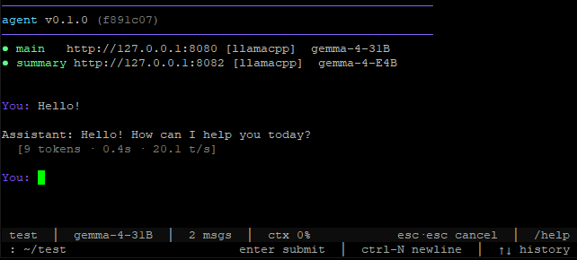

agent
agent
Source: README.md · last changed 2026-10-25 (2028584)
A coding assistant that runs in your terminal. You give it a task, and it reads files, edits code and runs commands until the task is done. It works with a model on your own machine (llama.cpp, Ollama, vLLM) or a hosted one.

📖 Documentation site: this README and the guides in docs/, rendered.
1. Install
On Linux or macOS with Python 3.10 or newer:
git clone https://github.com/mblakemore/agent.git && cd agent
./install.sh
Then open a new shell. The script sets up a virtual environment and adds an agent command. For Windows, manual installs and other options, see Install.
2. Connect a model
Run agent in the folder you want to work in:
cd ~/my-project
agent
The first time, a short setup wizard asks where your model is and connects to it:
| Your model | What to do |
|---|---|
| On this machine | Start a server first, for example llama-server -m model.gguf --port 8080. The wizard finds it, and three presses of Enter connect it. See Setup. |
| UCSB AI Commons | Pick "UCSB AI Commons" and paste your key. See AI Commons. |
| Another hosted API | Pick "OpenAI-compatible server", then "Another URL…". It asks for a key only if the server needs one. |
You can run the wizard again at any time with /setup. Not sure which model to run? See Recommended models.
3. Give it a task
Type what you want at the prompt:
You: fix the failing test in tests/test_parser.py
Or run a task without the interactive session:
agent -a "add a --verbose flag to cli.py"
A few things worth knowing on day one:
- Press Escape twice to stop a response.
/helplists the commands./modelswitches model, and/setupreconnects.agent -ccontinues where the last session left off.- Settings and history live in
.agent/in your project folder, which is kept out of git for you.
What it does
- Works through your project: it reads and edits files, searches code and runs shell commands, and keeps going until the task is done.
- Handles long sessions: older history is summarized in the background, and progress is saved every turn.
- Catches common model mistakes: broken tool calls are repaired, and invented file contents are caught before they mislead it.
- Can ask a bigger model: an optional advisor model is consulted when the main one gets stuck.
Learn more
| Guide | What's in it |
|---|---|
| Install | Install options, Windows (Git-Bash), dependencies |
| Setup | Getting a local model server running |
| Setup wizard | Everything /setup does: the checklist, calibration, testing |
| CLI and usage | Flags, slash commands, unattended runs, environment variables |
| Configurations | Common setups: one model, main + summary, adding an advisor |
| Config reference | Every config.json key and its default |
| How it works | The turn loop, guardrails, escalation, code layout |
| Agent scaffold | /agent: turning a folder into an autonomous agent repo |
| The job contract | Running the agent as a verifiable worker (--job) |
| Recommended models | Which models work well and why |
| AI Commons | The UCSB AI Commons gateway |
| Legacy Bedrock | The older published-bot Bedrock gateway |